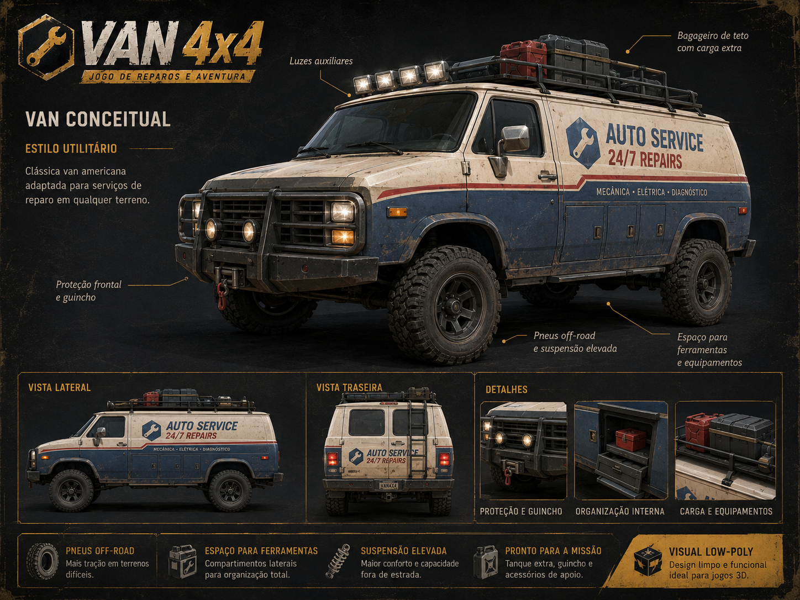
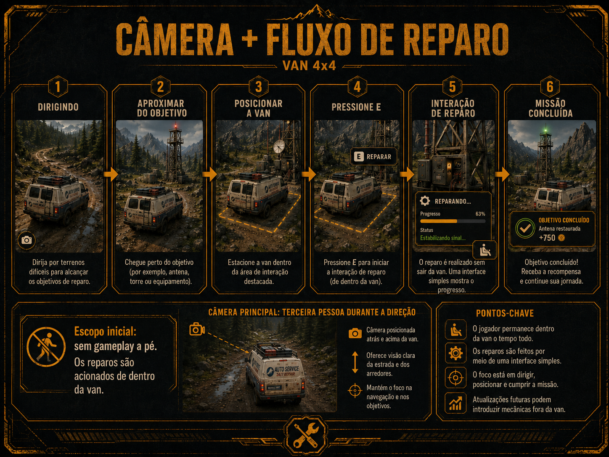
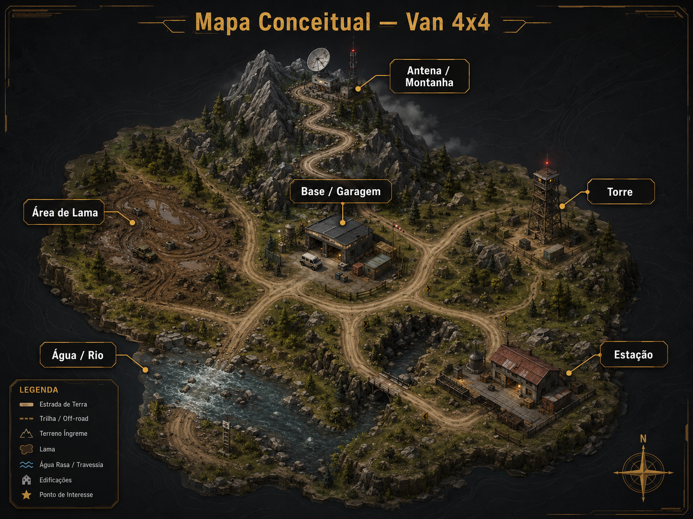

Um jogo 3D off-road com física arcade, terrenos extremos
e uma van que se recusa a parar.
Visão Geral
Van 4x4 é um jogo 3D de direção off-road com física arcade
e visual low-poly, desenvolvido pela Low Gear Games.
O jogador controla uma van de manutenção praticamente
indestrutível e precisa atravessar terrenos difíceis para
chegar até diferentes pontos do mapa e realizar serviços
de reparo.
O foco principal está na dirigibilidade exagerada, na exploração
dos ambientes e nas situações inesperadas geradas pela física.
A proposta não é simular um veículo de maneira realista, mas
criar uma experiência divertida, responsiva e fácil de aprender.
Não existe uma única maneira correta de dirigir.
Habilidade, criatividade e situações absurdas fazem parte da experiência.
Saltar, usar turbo, derrapar, derrubar árvores e capotar podem ser tão
interessantes quanto chegar ao destino com uma aterrissagem perfeita.
O projeto está em desenvolvimento: os estados abaixo distinguem o
protótipo atual da versão final planejada.
Informações do Jogo
GêneroDireção Off-road / Arcade
PerspectivaTerceira pessoa 3D
ModoSingle-player
Plataformas pretendidasWindows, Linux e macOS
Visual3D Low-poly
PúblicoJogadores casuais e fãs de jogos de direção
Windows, Linux e macOS são plataformas pretendidas; não representam
uma declaração de testes concluídos em todos esses sistemas.
Objetivo do Jogo
O jogador deve utilizar a van para atravessar terrenos
difíceis e chegar até pontos do mapa onde existem equipamentos
que precisam de manutenção.
O principal desafio está no percurso. Lama, pedras, grandes
inclinações, água e obstáculos modificam
a forma como o jogador precisa conduzir a van.
O jogo deve ser rápido de entender e permitir que uma pessoa
comece a dirigir poucos segundos após iniciar a partida.
Escopo da Versão Inicial
Implementado Presente no protótipo.
Planejado Meta da versão final de dezembro.
Futuro Fora do compromisso principal.
O projeto é desenvolvido individualmente. Por esse motivo,
o escopo permanece compacto e concentrado
na qualidade da principal mecânica do jogo: dirigir a van.
Em vez de várias fases ou mapas extensos, a primeira versão
utilizará um único mapa principal com áreas diferentes,
reaproveitado por várias missões.
1 Mapa Principal
Planejado: aproveitar o terreno e a extensão
já existentes em um mesmo mapa, com regiões e rotas variadas.
4 Serviços de Manutenção
Planejado: quatro destinos, reutilizando
a interação básica de reparo e variando o desafio do percurso.
Sem Personagem a Pé
A versão inicial mantém toda a experiência centrada
na van e evita a criação de um segundo sistema
de movimentação.
Estado atual: a fase com relevo já permite dirigir,
explorar, realizar façanhas e concluir o reparo da antena. Garagem,
economia, retorno, relatório e salvamento ainda serão implementados.
Marcos de Entrega
Primeiro TDD · previsto
GDD + TDD + Andamento · previsto
Versão final · prevista
Futuro Fora do Escopo Principal
Clima dinâmico complexo e tempestades com alterações extensas de física.
Guincho funcional, snorkel como melhoria específica e ferramentas individuais complexas.
Sistema detalhado de danos e oficina 3D totalmente explorável.
Grande variedade de minijogos de reparo e múltiplos modelos de van independentes.
Mundo aberto muito maior e campanha longa com dezenas de missões.
Princípios de Design
As decisões do projeto serão guiadas por quatro princípios
principais.
Reconhecer o caos sem punir excessivamente: um pouso desastroso não
deve apagar uma façanha válida. A van permanece praticamente
indestrutível, e o jogador deve poder recuperar o controle e continuar.
Diversão antes do Realismo
A física poderá quebrar expectativas realistas sempre
que isso resultar em uma experiência mais divertida.
Direção como Mecânica Central
O restante do jogo deve apoiar a experiência de dirigir,
explorar terrenos e superar obstáculos.
Escopo Controlado
Poucos sistemas bem executados terão prioridade sobre
grande quantidade de conteúdo.
Performance desde o Início
Otimização é um requisito de design e deve influenciar
arte, mapa, física, efeitos e arquitetura do jogo.
Gameplay
A direção é o núcleo da experiência: seguir a estrada, buscar atalhos,
acelerar, usar turbo, saltar e improvisar diante dos obstáculos.
O percurso deve ser divertido mesmo antes de chegar ao serviço.
Durante o percurso será necessário lidar com terrenos,
obstáculos e condições ambientais que alteram a aderência,
estabilidade e dificuldade de movimentação.
A estrada oferece uma rota mais segura, mas o jogador poderá
tentar atalhos e caminhos off-road mais arriscados.
Implementado Ciclo do Protótipo
Receber chamado da antena→Dirigir→Superar terreno→Realizar reparo→Concluir o serviço
Durante a direção, as façanhas já geram pontos e estrelas de sessão.
O reparo da antena encerra o serviço diretamente. Não há seleção de
missão, garagem, pagamento, relatório consolidado ou compra de peças
no fluxo atual.
Planejado Ciclo da Versão Final
A garagem conecta os serviços em um mesmo mapa. O fluxo abaixo é a
meta para dezembro, não uma descrição de funcionalidades concluídas.
Estar na garagemPonto central entre serviços.
Escolher um serviçoDefinir o destino de manutenção.
Configurar a vanEquipar as peças disponíveis.
Sair da garagemIniciar a viagem de ida.
Enfrentar o percursoTerreno, obstáculos e caminhos alternativos.
Acumular façanhasRegistrar manobras, destruição e estatísticas.
Realizar a manutençãoRestaurar o equipamento no destino.
Escolher o retornoVoltar dirigindo ou usar retorno rápido.
Finalizar na garagemEncerrar a missão após o retorno.
Consultar o relatórioRever o desempenho do serviço.
Receber dinheiroPagamento fixo e bônus pelo desempenho e pelo caos.
Comprar ou equipar peçasExperimentar novas combinações.
Escolher outra missãoRetomar o ciclo de direção e manutenção.
O diagrama em HTML substitui a apresentação do antigo loop ilustrado.
A imagem original é preservada como histórico, mas não é usada para
representar o novo fluxo.
Implementado Turbo e HUD
Na fase com relevo, o turbo consome energia, exige uma espera antes
da recarga e limita a reativação após esgotamento. O HUD mostra
velocidade, reserva e estado do turbo. As cenas antigas preservam
o turbo ilimitado, portanto seu comportamento não representa a
limitação de energia da fase atual.
Implementado Façanhas Atuais
O jogo mede distância horizontal e tempo no ar, reconhece giros
completos para frente/trás e rolamentos laterais e distingue pouso
limpo, pouso brutal e capotamento após salto. Cada façanha válida
recebe pontos, de uma a três estrelas, estatísticas e uma mensagem
humorística. Pontos e estrelas são acumulados durante a sessão.
Pequenas oscilações, giros horizontais e o reposicionamento não devem
criar recompensas indevidas. A classificação observa a van depois
do impacto, e capotar não zera os pontos da manobra. O jogador pode
ser reconhecido tanto por habilidade quanto por uma chegada absurda.
Planejado Estatísticas, Destruição e Combos
A expansão reunirá os eventos atuais em estatísticas por missão,
acrescentará destruição e combos e alimentará o relatório e os
bônus financeiros. Esses registros completos e sua integração
econômica ainda não existem.
Saltos e Manobras
Quantidade de saltos, tempo no ar, distância horizontal, maior salto, giros, cambalhotas, pousos limpos, pousos brutais e capotamentos.
Destruição
Árvores derrubadas, caixas atingidas, barris e outros obstáculos atingidos e eventos relevantes de colisão. Caixas e barris atuais reagem à física; não possuem destruição implementada.
Combos
Sequências próximas de façanhas e combinações de saltos, giros e impactos, com multiplicadores moderados de pontuação.
Percurso
Tempo de ida, tempo de volta, tempo total, distância percorrida e tipo de retorno utilizado.
Serviço
Missão realizada, reparo concluído e avaliação geral do desempenho, sem obrigar direção perfeita.
Pontos não são dinheiro. Pontos avaliam façanhas e
servirão ao cálculo de bônus; dinheiro será usado na garagem. A
conversão, os multiplicadores e os limites serão balanceados depois.
Regras Planejadas para Recompensar o Caos
Contabilizar cada evento uma vez e evitar bônus artificiais por colisões repetidas.
Não permitir dinheiro infinito por uma árvore ou por seus fragmentos.
Aplicar limites ou redução de bônus quando necessário para evitar exploração infinita de pontos.
Preservar o valor das façanhas mesmo com pousos ruins e capotamentos, valorizando a criatividade.
A Van
A van é o principal elemento do jogo e sua dirigibilidade
deve ser a principal fonte de diversão.
A referência visual é uma van americana clássica de serviços
e manutenção, com carroceria retangular, aparência robusta
e espaço para ferramentas e equipamentos.
A física já é propositalmente exagerada. O veículo pode
enfrentar grandes inclinações, atravessar obstáculos,
realizar saltos, derrapar e capotar sem ser destruído.
Mesmo após situações absurdas, o objetivo será permitir que
o jogador recupere o controle rapidamente e continue a missão.
Implementado Identidade e Dirigibilidade
A van americana antiga de manutenção já tem carroceria creme e azul,
faixa utilitária laranja, inscrições “24/7 REPAIRS” e “LG-01”, rack
de teto e pneus com detalhes off-road. O visual usado e robusto é
construído com formas simples e materiais coerentes com o estilo low-poly.
O controlador arcade possui suspensão, direção, assistência de
estabilidade, drift e controle de rolamento no ar. A/D também ajuda
na recuperação de capotamentos; R reposiciona a van. Impactos não
acionam um sistema de vida ou destruição do veículo.

Referência conceitual, não uma captura do jogo. A van low-poly
já foi modelada e utiliza parte desta identidade. Guincho,
compartimentos e outros acessórios ilustrados não representam
funções implementadas nem exigências da versão final.
Física Arcade
Comportamento exagerado e divertido em vez de
simulação automobilística realista.
Van Indestrutível
Capotamentos, saltos e impactos fazem parte da
experiência e não encerram a partida.
Terreno como Desafio
O caminho escolhido pelo jogador é uma parte
importante de cada missão.
Câmera e Interação
A câmera principal é em terceira pessoa e acompanha
a van durante toda a experiência.
A versão inicial não terá personagem controlável fora do
veículo. Essa decisão mantém o escopo concentrado na direção
e evita a necessidade de implementar movimentação a pé,
animações de personagem e uma segunda câmera de gameplay.
Durante a Direção
A câmera fica atrás e acima da van, utilizando
movimentação suavizada e permitindo boa leitura
do terreno à frente.
Ao Chegar no Reparo
O jogador posiciona a van dentro da área de interação,
praticamente parada, e segura E por aproximadamente 2 segundos.
Durante o Reparo
A câmera de direção é mantida. A interface mostra progresso;
soltar E, mover a van acima do limite ou sair da área reinicia
a contagem. O indicador muda de vermelho para verde ao concluir.

Referência conceitual do reparo de dentro da van, não uma
captura do protótipo. Atualmente é necessário segurar E e a
câmera não se aproxima do equipamento. O pagamento ilustrado
é apenas conceitual: não existe economia implementada e nenhum
valor de recompensa financeira foi definido.
Fluxo da Interação
Aproximar-se→Posicionar a van→Segurar E · 2 s→Interação de reparo→Serviço concluído no protótipo
A complexidade dos reparos será mantida baixa para que eles
complementem a direção sem competir com a mecânica principal.
Controles
Os controles atuais são simples para permitir que novos jogadores
entendam rapidamente como jogar.
W
Acelerar
S
Frear / Ré
A / D
Direção / Rolamento no ar / Recuperação
Espaço
Freio de mão
E
Segurar para reparar
R
Reposicionar a van
Shift + W
Acelerar com turbo quando disponível
Os controles ainda poderão ser modificados durante os testes
de jogabilidade. Suporte a gamepad é uma possibilidade futura;
o mapeamento atual é de teclado e não comprova compatibilidade com controle.
Progressão
Planejado Garagem, economia, peças e salvamento fazem parte da meta da versão final. Nenhum desses sistemas está implementado no protótipo atual.
Garagem: Ponto Central entre Missões
A primeira garagem poderá ser uma interface simplificada, sem exigir
um espaço 3D explorável. Ela permitirá selecionar serviços, consultar
dinheiro e informações básicas da van, visualizar melhorias, comprar
peças, equipar e trocar as peças adquiridas e iniciar novas missões.
Economia: Serviço Garantido, Bônus pelo Estilo
O pagamento fixo por concluir um serviço garante a progressão. Bônus
poderão vir dos pontos de façanhas, de destruições e combinações e de
outros resultados moderados de desempenho. Acrobacias são uma opção
divertida, não uma exigência para avançar.
Preços, pagamentos, conversão de pontos em dinheiro e limites de bônus
ainda serão balanceados. As estrelas atuais são reconhecimento visual
e não uma moeda de compra. Não há valores financeiros finais definidos.
Melhorias: a Mesma Van, Novas Combinações
A progressão modifica a mesma van clássica com peças equipadas, em vez
de oferecer vários veículos independentes. As categorias iniciais
previstas são motor, pneus, suspensão e turbo, com poucas opções
relevantes em cada uma. Peças compradas poderão ser trocadas livremente
na garagem.
Motor
Alternativas de força e aceleração, com compromissos de controle e agilidade a balancear.
Pneus
Alternativas de tração e aderência, alterando a facilidade de contornar terrenos e iniciar derrapagens.
Suspensão
Alternativas de estabilidade, resposta a impactos e potencial para saltos e manobras.
Turbo
Alternativas de intensidade e disponibilidade, com vantagens e limitações perceptíveis.
As combinações abaixo são exemplos de design, não classes obrigatórias nem conjuntos já disponíveis no jogo:
Van Bruta
Mais estabilidade, boa tração e melhor comportamento em impactos; menor agilidade ou aceleração.
Van Veloz
Mais velocidade, aceleração intensa e potencial para saltos longos; menor estabilidade ou controle nas curvas.
Van Saltadora
Suspensão e comportamento aéreo favoráveis a manobras; menor estabilidade em determinadas situações.
O jogador poderá combinar peças livremente. Elas terão vantagens e
desvantagens, não apenas aumentos cumulativos. A van básica deverá
completar todas as missões, e nenhuma configuração deve tornar o jogo
impossível. As diferenças precisam preservar a dirigibilidade arcade.
Resistência Não Significa Vida
A van continua praticamente indestrutível. Uma configuração mais
resistente poderá mudar estabilidade, massa, recuperação ou resposta
às colisões, sem exigir barra de vida ou simulação de danos. Essas
diferenças são propostas para as peças futuras, não mudanças já
aplicadas à física aprovada do protótipo.
Salvamento e Continuidade
A versão final deverá preservar dinheiro disponível, missões
concluídas, peças compradas, peças equipadas e progresso relevante
da campanha. O protótipo ainda não possui essa persistência: os
pontos e estrelas atuais são de sessão. Formato, organização e
detalhes técnicos do salvamento serão estudados no TDD.
Mapa e Ambientes
A versão final aproveitará um mesmo mapa e suas regiões para os
quatro serviços. A variedade vem do relevo, das rotas, dos obstáculos
e das superfícies, sem depender de clima dinâmico complexo.
Implementado O projeto
já superou o blockout inicial: há terreno com relevo físico, estrada
sinuosa integrada ao solo, montanhas, extensão extrema, lago e
vegetação low-poly. A estrada orienta o percurso sem impedir a
exploração fora dela.
Árvores selecionadas têm colisão e podem cair e desaparecer após
impactos fortes, com fragmentos visuais. Caixas, cones e barris
reagem à van, inclusive na barricada de caixas; não possuem sistema
de destruição. Lama e água alteram a condução, enquanto poeira,
respingos nas rodas e impacto no lago dão leitura às superfícies.
O playground original mantém dois serviços de teste. A experiência
de terreno é uma cena de testes reutilizada pela fase atual com a
antena. Esses cenários não representam mundos separados da campanha
final nem quatro missões já integradas.

Referência conceitual inicial, não o layout atual. Base física,
torre e estação ilustradas não estão prontas. O lago existente
substitui a ideia de rio como referência de travessia; as quatro
missões atualizadas são descritas abaixo. A garagem planejada
poderá começar como interface, sem reproduzir este edifício.
Áreas Principais
Base / Garagem
Planejado: ponto central entre serviços,
inicialmente por uma interface simples de seleção e peças.
Montanha / Antena
Implementado: mirante com antena, estrada sinuosa, pedras,
grandes inclinações e possibilidade de atalhos
diretamente pelo terreno.
Área de Lama
Implementado: zonas de baixa aderência,
incluindo a saída de lama na extensão. Trajetória e velocidade importam.
Lago / Travessia
Implementado: lago com interação física da
van e respingos. A água cria desafios e possibilidades de percurso.
Extensão Extrema
Implementado: elevações e percursos mais
difíceis ampliam a exploração. Novos equipamentos ainda serão posicionados.
Novos Pontos de Serviço
Planejado: integrar bomba, gerador e estação
meteorológica às áreas existentes, sem exigir novas grandes regiões.
Filosofia do Layout
Rota Segura
Estradas oferecem uma maneira previsível de alcançar
os objetivos.
Atalhos Off-road
O jogador pode abandonar a estrada e tentar caminhos
mais rápidos, difíceis ou absurdos.
Mapa Compacto
Relevo e caminhos sinuosos serão utilizados para criar
sensação de distância sem exigir uma área gigantesca.
O relevo atual já sustenta a experiência de direção. A integração
dos novos serviços deve aproveitar esse trabalho, preservando curvas,
subidas, descidas, saltos e liberdade de exploração.
Missões e Reparos
A meta da versão final é oferecer quatro serviços no mesmo mapa.
O desafio principal continua sendo alcançar o destino. Os equipamentos
poderão compartilhar uma interação básica de reparo, variando local,
dificuldade do trajeto e apresentação visual, sem quatro minijogos
independentes.
01
Antena de Comunicação
Implementado: reparo Alcançar a antena no mirante e restaurar o sinal. O protótipo já conclui o serviço nesse ponto.
Planejado: integrar o reparo ao fluxo de garagem, retorno e progressão.
Desafio principal: subida, curvas e terreno rochoso.
02
Bomba de Água
Planejado: integração Alcançar uma estação de bombeamento e restabelecer seu funcionamento.
O playground antigo já permite reparar a bomba após a antena. Essa entrega é parcial em relação à versão final: a bomba ainda não integra a fase com relevo nem o novo fluxo de missões.
Desafio previsto: acesso à instalação e travessia de água.
03
Gerador Remoto
Planejado Uma instalação isolada está sem energia. Chegar ao equipamento e religar ou reparar o gerador.
Desafio previsto: terreno irregular e escolha de rota.
04
Estação Meteorológica
Planejado Serviço em região mais extrema, com trajetos difíceis, obstáculos e possível travessia de água. Não exige tempestades ou clima dinâmico.
Desafio previsto: percurso extremo e leitura do terreno.
Os quatro serviços deverão aproveitar preferencialmente as áreas
existentes. Nomes e detalhes do gerador e da estação ainda podem ser
refinados. A integração dos serviços não significa criar quatro mundos.
Implementado Reparo da Antena
Aproximar a van, estacionar na área e segurar E por aproximadamente
2 segundos. Soltar a tecla, sair da área ou perder a condição de parada
reinicia o progresso. O indicador passa de vermelho para verde, a
interface anuncia “Serviço concluído!” e o reparo não pode ser repetido.
O marcador de objetivo orienta a aproximação.
Planejado: no fluxo final, concluir o reparo libera
a escolha de retorno; o encerramento da missão e o pagamento acontecem
na garagem. Esse fluxo ainda substituirá a conclusão direta atual.
Planejado Retorno à Garagem
Voltar Dirigindo · Padrão
Retornar com a van, podendo explorar e acumular novas façanhas,
pontos e possíveis bônus de percurso. Registrar separadamente
tempo de ida e tempo de volta. Esta opção não será obrigatória.
Retorno Rápido · Opcional
Ir diretamente à garagem depois do reparo, mantendo pagamento
normal, pontos e bônus já conquistados. Não acumular façanhas
de volta nem aplicar penalidade financeira automática.
O relatório deve identificar o tipo de retorno. Se houver retorno
rápido, não inventar tempo de direção na volta: apresentar essa
condição explicitamente, preservando o tempo total realmente registrado.
Planejado Relatório Final de Missão
Ao encerrar o serviço na garagem, uma tela legível reunirá resultados
de direção, manutenção e recompensas. As informações poderão ser
agrupadas, sem exibir todos os números simultaneamente.
Serviço e Viagem
Nome da missão, reparo concluído, tempo de ida, tempo de volta ou indicação de retorno rápido e tempo total.
Façanhas e Caos
Quantidade de saltos, maior salto, giros e cambalhotas, capotamentos, árvores derrubadas, obstáculos atingidos, pontuação e bônus por combos.
Pagamento
Valor fixo do serviço, bônus por façanhas e total de dinheiro recebido. Todos os valores e conversões ainda serão balanceados.
O tom poderá continuar humorístico, por exemplo: “O cliente não
perguntou como você chegou. Melhor assim.” A frase é uma sugestão
editorial, não uma mensagem já implementada nessa tela.
Performance e Otimização
Performance é um dos objetivos centrais do projeto e deverá
ser considerada desde as primeiras decisões de desenvolvimento,
e não apenas como otimização realizada no final.
A fidelidade gráfica será propositalmente limitada quando
necessário. A prioridade é oferecer jogabilidade responsiva,
carregamento rápido e altas taxas de quadros por segundo.
Implementado O protótipo
utiliza geometria low-poly, materiais simples, grupos de vegetação
com MultiMesh, recursos de terreno preparados previamente e poucos
objetos físicos dinâmicos. Isso expressa a prioridade de desempenho,
mas não comprova uma taxa de quadros em hardware modesto.
Hardware Modesto
A direção visual e os sistemas deverão ser suficientemente
leves para permitir execução em computadores modestos,
utilizando configurações reduzidas quando necessário.
60 FPS
A experiência deverá buscar manter 60 FPS em máquinas
compatíveis com os requisitos mínimos definidos
durante os testes.
120 / 144+ FPS
Hardware mais potente deverá poder aproveitar monitores
de alta taxa de atualização sem limitação artificial
a 60 FPS.
Diretrizes de Performance
Modelos 3D low-poly
Materiais e shaders simples sempre que possível
Texturas pequenas e reutilizáveis
Quantidade controlada de luzes e sombras dinâmicas
Vegetação e objetos de cenário de baixo custo
Uso limitado de partículas e efeitos gráficos pesados
Mapa compacto em vez de mundo aberto muito extenso
Configurações gráficas ajustáveis como meta planejada, ainda sem menu implementado
Preservar gameplay independente da taxa de quadros como requisito a validar
Metas, não resultados comprovados: 60 FPS em
hardware modesto e taxas maiores em máquinas mais potentes serão
avaliados em testes. Requisitos mínimos, ajustes gráficos e
validação multiplataforma ainda precisam ser consolidados.
Equipe
Luciano Ludwig Heling
Desenvolvimento individual do projeto.
Funções:
Game Design, Programação, Level Design, Arte 3D,
Testes, Documentação e Gerenciamento do Projeto.
Tecnologias
Godot 4.7.2
Engine do protótipo, com renderizador Compatibility.
Cenas, veículo, ambiente e interfaces são construídos
com recursos nativos, priorizando simplicidade e desempenho.
GDScript
Linguagem principal utilizada para implementar
mecânicas e sistemas de gameplay.
Jolt Physics
Motor físico configurado no projeto, utilizado pelos
corpos e colisões do veículo, terreno e objetos.
Git e GitHub
Utilizados para versionamento, documentação,
acompanhamento do desenvolvimento e gerenciamento
das tarefas.
Quaternius
Seleção do Stylized Nature MegaKit [Standard] para
árvores, pedras e plantas. Os modelos usam licença CC0,
registrada junto aos recursos do projeto.
Arte e Materiais Nativos
A van e os equipamentos combinam formas e malhas simples.
O solo utiliza cores de vértice e detalhe de textura, com
materiais padrão da Godot, sem exigir efeitos gráficos complexos.
HTML e CSS
Utilizados para desenvolver este Game Design Document
e mantê-lo versionado junto com o restante do projeto.